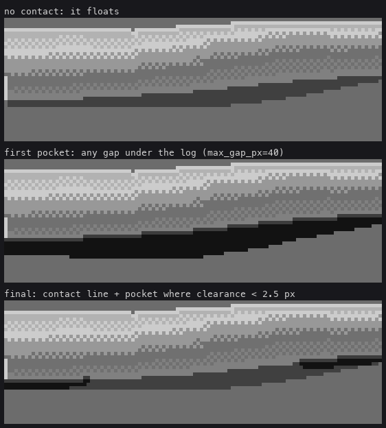
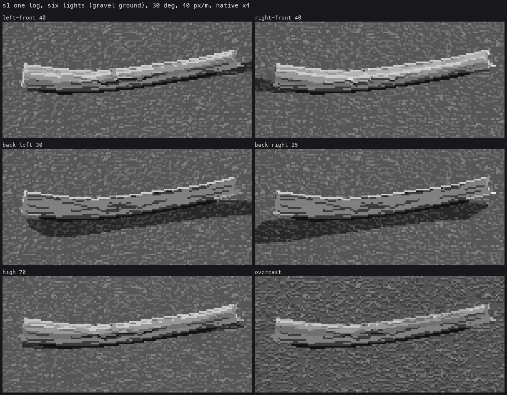

3. Sit it on the gravel
Trigger: every log that touches the ground, which is every log.
A log that doesn't sit is a sticker. Sitting takes three things: a shape that can touch the ground at a few points and not everywhere, the contact drawn where it touches, and shadows that belong to the ground and not to the log's own form.
A log, not a pipe
My first log was a perfect cylinder with a square cap. The critic's round 1: "It reads as a steel pipe." geo.make_log is the fix:
# code/geo.py
def make_log(L=3.0, r=0.16, yaw=0.0, centre=(0, 0), taper=0.75, bend=0.06, sag=0.03, lumps=0.08,
nseg=7, ends=('sawn', 'snapped'), seed=0, sink=0.015, ...):
rng = np.random.default_rng(seed)
t = np.linspace(-0.5, 0.5, nseg)
ph = rng.uniform(0, 2 * np.pi)
lat = bend * L * (np.sin(np.pi * (t + 0.5)) * rng.choice([-1, 1]) + 0.3 * np.sin(2 * np.pi * t + ph))
vert = sag * L * np.sin(np.pi * (t + 0.5)) * rng.choice([-1, 1])
rad = r * (1 + (taper - 1) * (t + 0.5)) * (1 + lumps * (rng.random(nseg) - 0.5) * 2)
...
pts[:, 2] = rad + vert
pts[:, 2] -= (pts[:, 2] - rad).min() + sink # lowest point touches, sunk a little
- A lateral bow, plus a little S-wave.
- A vertical sag, up or down.
- A taper to about three quarters.
- ±8% lumps in radius at seven stations.
Then the whole log is lowered until its lowest point is 1.5 cm into the gravel. A log that sags upward therefore rests on its two ends and lifts off in the middle, and that lift is what the pocket below draws.
The contact line and the pocket
# code/render.py
def contact(cv, buf, logs, cam):
pocket = geo.belly(buf, logs, cam)
gm = pocket & (buf['obj'] < 0)
cv.step[gm] = 0
return _contact_line(cv, buf, logs, cam)
def _contact_line(cv, buf, logs, cam):
obj = buf['obj']
wood = obj >= 0
below = np.zeros_like(wood); below[1:] = wood[:-1] & ~wood[1:]
for y, x in zip(*np.nonzero(below)):
lg = logs[obj[y - 1, x]]
if lg.sdf(buf['P'][y, x][None])[0] < 2.0 / cam.scale: # ground point within 2 px of the log
cv.step[y, x] = 0
# the log's own bottom row, where it touches, goes to the deepest wood step
...
# code/geo.py
def belly(buf, logs, cam, max_gap_px=2.5):
"""ground pixels UNDER a log with a small clearance (a vertical ray from the ground meets
the log within max_gap_px): the dark pocket where a log lifts off the gravel. Larger gaps
are simply ground in the log's shadow."""
...
for h in np.linspace(0.2, 1.0, 5) * hmax:
q = p + np.array([0, 0, h])
for lg in logs:
hit |= lg.sdf(q) < 0

figs.py contact. The middle panel is the same code with max_gap_px=40, which is what my first version effectively did.
The trap: my first pocket marked every ground pixel with the log anywhere above it. That made a 4-px black band under the whole log. A pocket is where the log nearly touches, so the limit is a clearance of 2.5 px, not "under the log". Everything else under the log is ground in its cast shadow: two steps down, not black.
Cast shadows, without acne
Cast shadows are rays marched from each surface point toward the sun, against every log's SDF, starting from the point nudged 0.6 px along its normal. They're cheap enough if each ray is first tested against each log's bounding sphere.
My first back-lit logs had a rim that came out as evenly spaced dashes, like stitching:

I first read this as a rim-drawing problem. It was shadow acne. A sun ray leaving a grazing surface point on the log's lit edge clipped the log itself, so alternate pixels along the rim counted as cast-shadowed. A log's own form shadow is already the class rule's job, so the shadow pass simply skips the log a point belongs to:
# code/geo.py, shadow()
cand = (disc > 0) & ((-bq + np.sqrt(np.maximum(disc, 0))) > 0) & ~flat
cand &= buf['obj'].reshape(-1) != k # no self-shadow acne: a log's own form shadow
# is the class rule's job
This is a rule worth stealing whenever you combine a designed form rule with a physical shadow pass. Let the form rule own the object's own shadow, and let the shadow pass own only what other things cast.
On the ground, a cast shadow is the ground ramp two steps down, and the critic judged that ready. On wood, it's a family jump (lesson 2, rule 5).

The gravel here is my weakest element: texture everywhere at one scale, with no masses. For ground, go to the ground student. My logs stand on theirs unmodified.